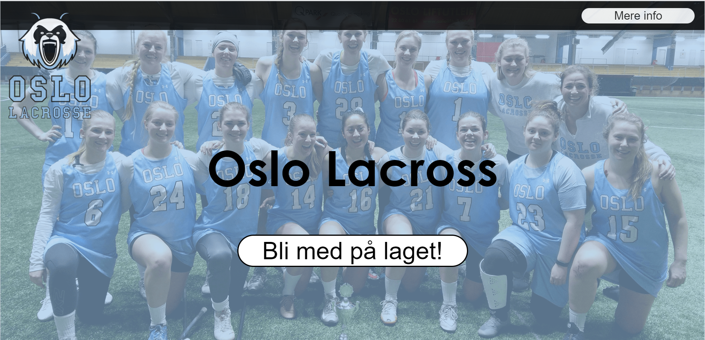

Mine Prosjekter
Oslo lacross hjemeside
Jeg lagd en nettside til idretslaget Osslo lacross. Denne siden jobbet jeg med i en uke og det var en av de første nettisdene jeg lagde. Det er noen små ting jeg ville ha endret men jeg ble fornøyd med slutt resultatet.
BattleCattle
BattleCattle er en norsk minecraft server jeg har jobbet på i litt over et år. det er en av de største i norge og jeg har lært mye av den. Som hvordan man setter opp servere og hvordan man programerer i Java. jeg har også lært mye om nettbutikker og såne andre ting. jeg har også lagd en nettside som viser minecraft kartet i nettleseren. Dette og nettbutikken er linka under! Genom dette prosjekte har jeg også jobbet mye med mysql og andre databaser. Det er nemlig ganske mye data og lagre når man har hat over 3000 spillere inpå serveren gjenom det siste året. Jeg har også lært mye om problemløsning og cybersikkerhet.
javascript
Jeg kan også en del om javascript du kan finne noen eksemper på små ting jeg har lagd unner. Du kan se all koden til denne netsiden og mine andre prosjekter på min github!
Video redigering
Jeg har lenge drevet med video redigering og kan mye om alle adobe programene. Jeg kan redigere videoer og bilder, jeg kan også fly drone og er en god photograf. Unner kan du se noen av prosjektene mine.